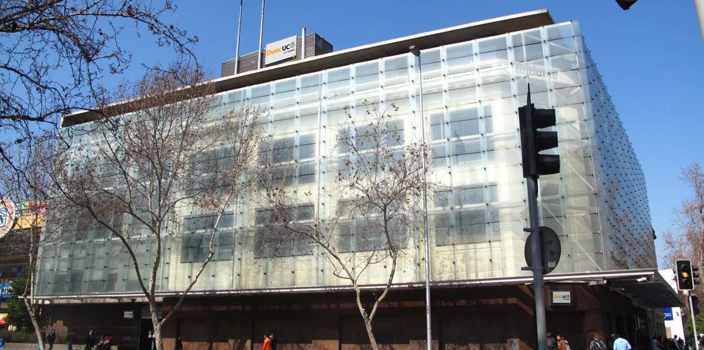

Sedes / Alameda



Descripción
Esta sede, ubicada en Alameda Libertador Bernardo O'Higgins, principal arteria de la capital de Chile, se encuentra el Centro Tecnológico de la Construcción, un importante aporte a esta industria, que recoge las necesidades del sector de contar con profesionales de sólida formación teórica - práctica. Con una arquitectura de vanguardia y dotado de la más alta tecnología, el edificio cuenta con más de 10.852 m2 construidos, distribuidos en siete plantas. Dispone de modernos laboratorios, talleres y de amplias salas de clases dotadas con equipos tecnológicos de última generación a disposición de 4.556 alumnos Respondiendo a las exigencias de la industria y a través de una fuerte vinculación con los agentes que componen el sector, el Centro Tecnológico de la Construcción de Duoc UC, ofrece las mejores alternativas formativas y tecnológicas que contribuyen al aumento de la productividad y calidad de la mano de obra del sector de la construcción de nuestro país. Otro aspecto de interés son los nexos con el sector industrial y el establecimiento de una red de cooperación con prestigiosas universidades e institutos extranjeros. P: Presenciales PEV: Programa Ejecutivo Vespertino
Carreras que se imparten
Construcción
Dibujo Arquitectónico y Estructural (Diurno/Vespertino)Ingeniería en Construcción (Diurno/Vespertino)
Ingeniería en Prevención de Riesgos (Diurno/Vespertino)
Técnico en Construcción (Diurno/Vespertino)
Técnico en Instalaciones Eléctricas (Diurno/Vespertino)
Técnico en Prevención de Riesgos Pev (Vespertino)
Técnico Topógrafo (Diurno/Vespertino)
Diseño
Diseño de Ambientes (Diurno)